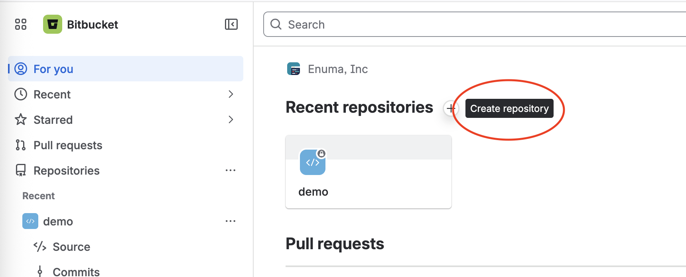
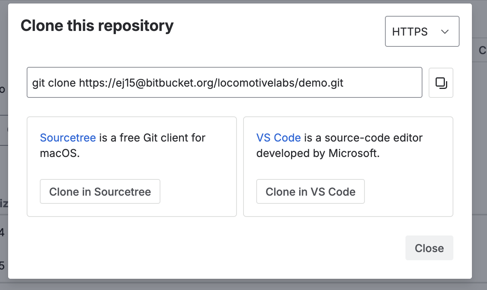

📁 저장소 생성 & 클론
새 저장소를 만들고, 그 저장소를 내 컴퓨터로 복사(클론)해 옵니다.
1. 새 저장소 만들기
오른쪽 위 ＋ Create → Repository를 누르고 이름(예: demo)을 입력한 뒤 Create repository를 클릭합니다.

2. 클론 주소 복사하기
저장소 화면 오른쪽 위 Clone 버튼을 누르면 주소가 나옵니다. HTTPS를 선택하고 주소를 복사하세요.

3. 내 컴퓨터로 클론하기
터미널을 열고 코드를 둘 폴더로 이동한 뒤, 복사한 주소로 클론합니다.
$ git clone https://ej15@bitbucket.org/locomotivelabs/demo.git
폴더가 생기면 그 안으로 들어갑니다.
$ cd demo
💡 클론(clone)은 Bitbucket의 저장소를 내 컴퓨터로 통째로 복사해 오는 거예요. 한 번만 하면 됩니다.
⚠️ 비밀번호 대신 앱 비밀번호(App password)를 요구할 수 있어요. 계정 설정 → App passwords에서 발급받아 입력하세요.